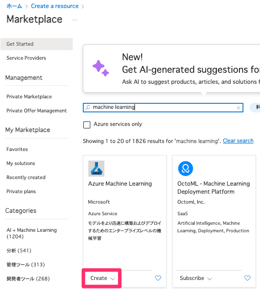
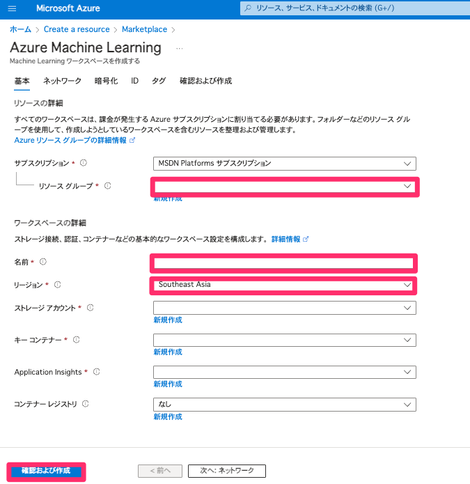
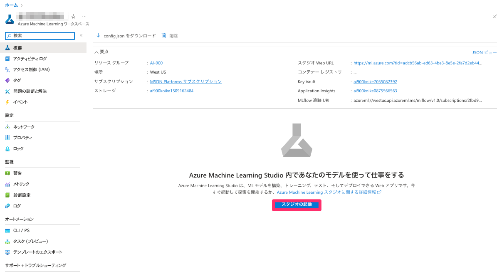
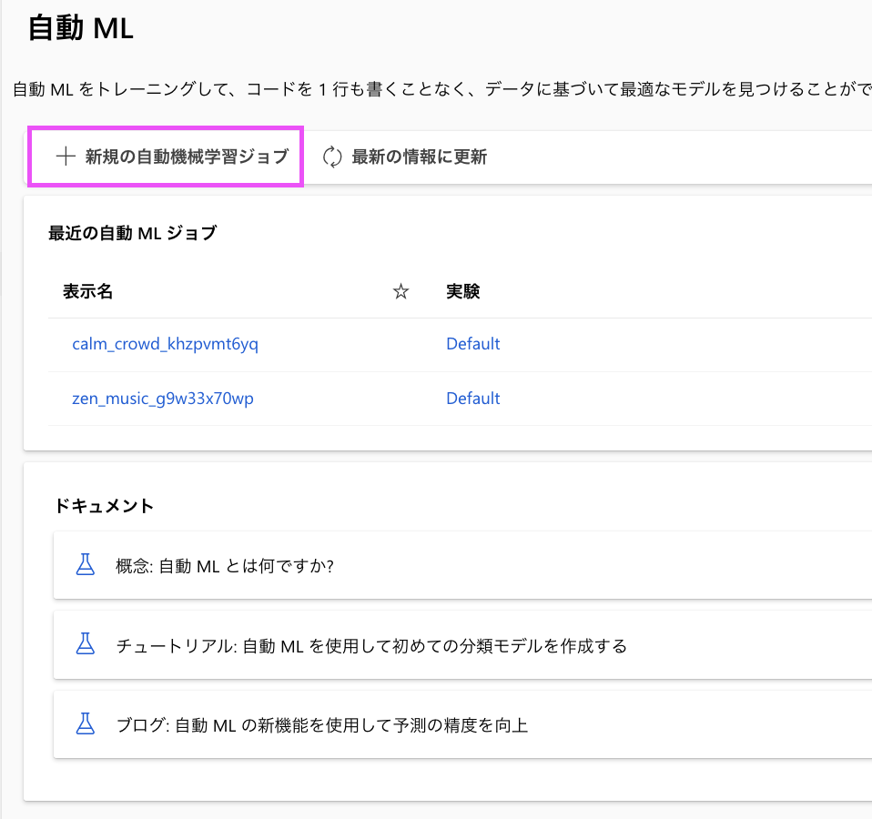
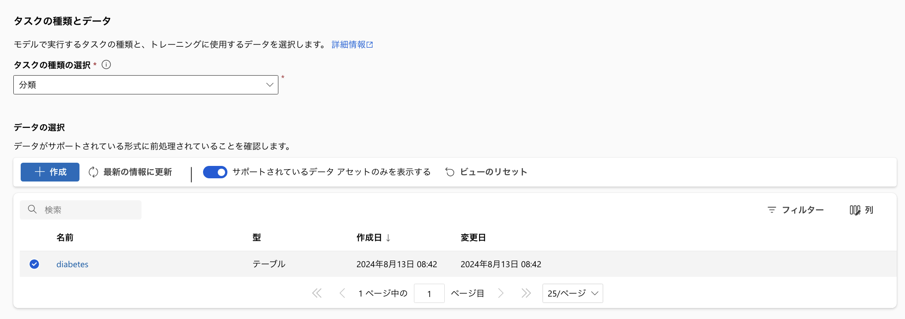
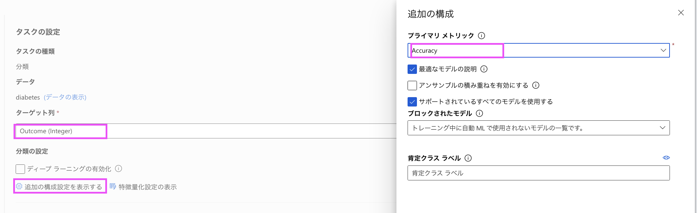
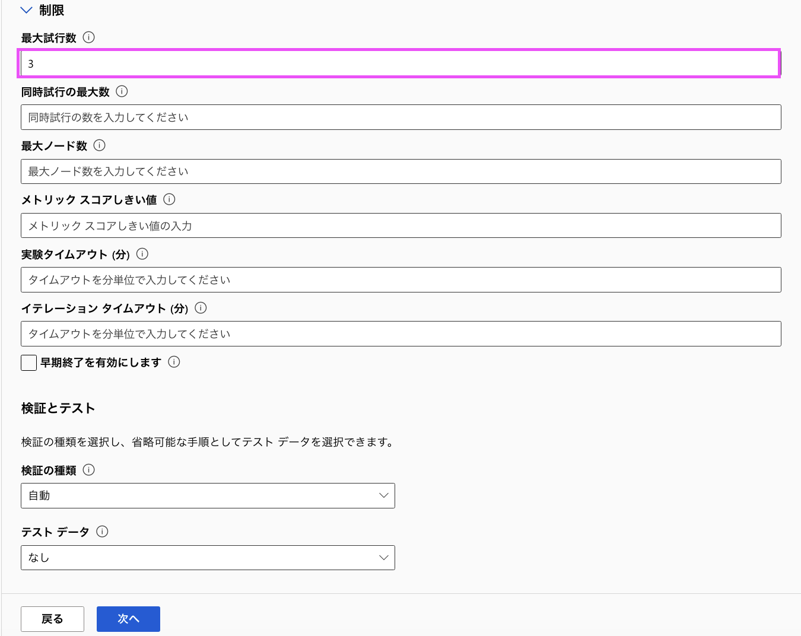
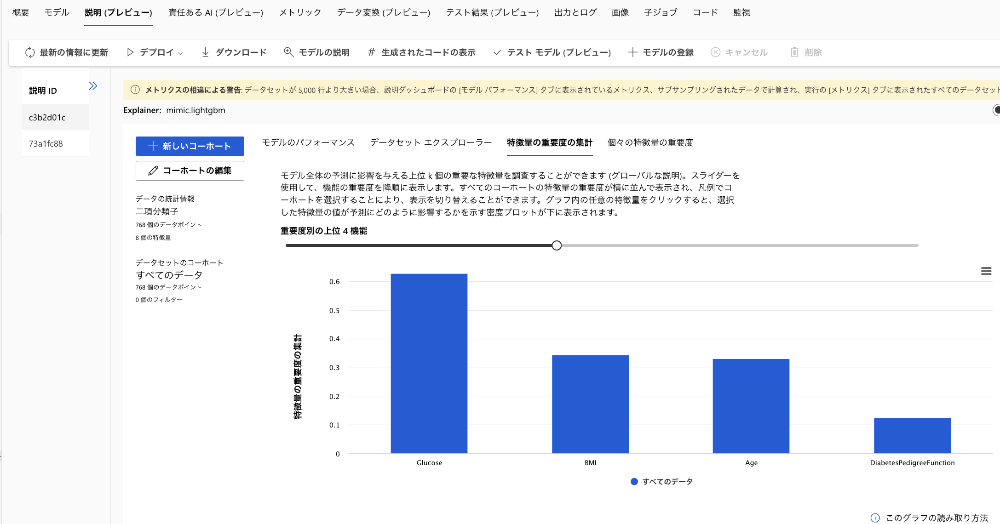

【ワーク 2 】 自動機械学習でモデル構築をする
本章では、デモデータを使用し AI モデルの構築を体験します。
環境構築

リソース作成の設定を行います。 - リソースグループ：Azure AIとおなじものor ご自身の名字で新規作成（例koike） - 名前:一意の名前（例）demomlapp名字 - リージョン: Azure AI とおなじリージョン 
入力ができたら、確認及び作成を行います。
作成後、直接リソースに遷移するか、リソースグループ上にあるワークスペース名をクリックし、表示された画面にある、[スタジオの起動]をクリックします。

スタジオが起動できました。
自動機械学習を実装する
Azure Machine Learning スタジオで、 [自動 ML] ページ を表示します。
次の設定で新規自動 ML ジョブを選択し次のユーザー インターフェイスへ進めます。

基本設定:
ジョブ名: diabetes-automl
説明: 糖尿病患者の予測モデル
タグ: “なし”**
[次へ]を選択し次のページに遷移します。
タスクの種類とデータ:
タスクの種類の選択: 分類
データセットの選択:
作成を選択し新しくデータセットを作成します。名前: diabetes
説明: 糖尿病患者のデータ
種類: 表形式
次へを選択します。
データ ソース:ローカルからを選び、データをアップロードします。
データ検証のスキップ: “選択しないでください”**
設定: = [ファイル形式]: 区切り記号付き = [区切り記号]: コンマ = [エンコード]: UTF-8 = [列ヘッダー]: 最初のファイルにのみヘッダーを付ける = [行のスキップ]: なし - データセットに複数行のデータを含める: 選択しない**
次の設定
スキーマ:パス 以外のすべての列を含める
自動的に検出された型を確認する bike-rentals データセットを作成した後に選びます。
タスク設定:
タスクの種類: 分類
データセット: diabetes

選択ができたら次へを選択します。作成したデータが出力されないときは適宜更新を押してください
ターゲット列: outcome (整数)
追加の構成設定を表示するを選択
プライマリ Accuracy

制限を展開し、最大試行回数を 3 に設定します。
検証とテスト: - 検証の種類: 自動 - テスト データセット: なし

画像のように設定ができましたら、次へを選択しましょう。
コンピューティング: デフォルトの設定のままで構いません
コンピューティングの種類を選択: サーバーレス
仮想マシンのレベル: 専用
仮想マシンのサイズ: Standard_DS3_V2
インスタンスの数: 1
次へを選択し、最後にトレーニング ジョブを送信します。 自動的に開始されます。 ジョブが完了するまでお待ちください。 しばらく時間がかかる場合があります。
【オプション】モデルの確認
自動機械学習ジョブが完了したら、トレーニングした最適なモデルを確認できます。
自動機械学習のジョブの [概要] タブで、最適なモデルの概要を確認します。
最適なモデルの [アルゴリズム名] の下のテキストを選び、詳細を表示します。
[メトリック] タブを選択し、residuals グラフと predicted_true グラフがまだ選択されていない場合は選択します。

最後にノーコード AI 開発のメリットとデメリットを考えてみましょう。
参考 - 自動機械学習とは